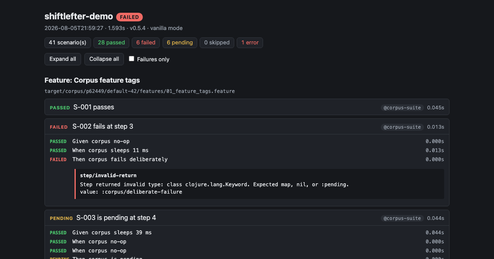

ShiftLefter
Quality as a dimension, not a phase.
A typed vocabulary for your app's behavior — your actors, your actions, your intents, defined once and shared by every human and every AI agent that touches your tests. Scenarios are validated against it before anything runs.
We don't heal your tests — we name what changed.
Failures arrive in your vocabulary — which actor, which intent, which step — not as a selector timeout.
Install
Java 21+ is the only requirement. No Clojure toolchain.
curl -fsSL https://raw.githubusercontent.com/SHIFT-LEFTER/shiftlefter/main/release/install.sh | bash
export PATH="$PWD/sl:$PATH"
sl --versionA real run report
Every sl run can write a self-contained HTML report — one file, no server,
failures expanded. This one is real, failures and all.

In plain terms: a Cucumber-compatible Gherkin test runner — Clojure core, real browsers and SMS, JUnit XML and HTML reports for CI — with a type system for what your tests are allowed to say.
What ShiftLefter does
- A vocabulary you own, enforced before anything runs. Your glossary declares
who can act and what they can do. Every scenario is checked against it at bind time, so a
typo'd actor dies with a suggestion — before a browser ever opens, not four minutes into a run.
This is real output:
SVO validation issues: ERROR: Unknown subject :user/alicce in step ":user/alicce fills {:id "password"} with 'SuperSecretPassword!'" at features/two-users.feature:6 Known subjects: :user/alice, :user/bob Did you mean: :user/alice? 1 binding issue(s) found. Cannot execute. # exit 2 — no browser was harmed - Macro expansion, not steps-calling-steps. Define "the user logs in" as a Gherkin step sequence, and ShiftLefter expands it at compile time — the runner sees every step with full provenance. When the login flow changes, update one macro definition, not 47 scenarios. Non-developers can read and edit the macro file. The workflow reuse teams reach for Screenplay to get — without the shadow-SUT complexity.
- Many actors, more than one interface. Each actor gets its own isolated
session —
:user/aliceand:user/boblog in side by side without sharing state. Web runs on a pluggable WebDriver/Playwright backend; SMS is a first-class second interface, so a 2FA flow can span web and text in a single scenario. - A well-behaved CI citizen.
--junit-xmlwrites results your CI ingests natively (verified against a real GitLabartifacts:reports:junitingest).--tags @smokeruns the subset your MR pipeline needs.--max-parallelruns scenarios concurrently with byte-identical report output, and@serialmarks the ones that must run alone. Results print live, per scenario, as they finish. - An agent front door.
sl orienttells a coding agent — or you — what mode a project is in, what would fail, and what to read next.sl agent-docserves the doctrine from inside the jar, and the step-vocabulary reference is generated from the registered steps, so it cannot drift from the code. Tests live in durable project artifacts — glossary, intents, config — not one-shot generated scripts.
Where it is, honestly
Solid today
- Multi-actor browser driving — independent sessions with real isolation.
- The typed vocabulary discipline — validated at bind time, with suggestions.
- The
slCLI — run, format, dry-run, diagnose; JUnit XML, HTML, and EDN output; tag filtering; parallel scenarios. - Gherkin parsing & lossless formatting — 46/46 official Cucumber test files, usable as a CI formatting gate.
- Scenario lifecycle hooks — named in the feature file
(
@hook=), registered next to your config. Befores fail fast before a browser ever opens; afters run while it's still alive; every hook that ran is in the report. - A scenario data plane — regex named captures with
{name}interpolation, so a value captured in one step is usable in the next.
Building toward
- The traceability graph — requirements ↔ use cases ↔ features ↔ the runs that prove them.
- Semantic diffing of live pages — ships today as a dev/REPL preview (SIEVE), heading for the CLI.
- Not just what changed — how, and what it puts at risk.
- First-class fixtures and brownfield suite migration.
The baton pass: agents write good end-to-end tests against this surface now; the same vocabulary is the foundation they'll use to map tests to requirements, use cases, and provenance. Adopt it for the left column; the right column is why the discipline compounds.
For AI agents
If you're an agent (or you brought one): install, then ask the tool itself.
curl -fsSL https://raw.githubusercontent.com/SHIFT-LEFTER/shiftlefter/main/release/install.sh | bash
./sl/sl orient # where am I, what would fail, what to read next
./sl/sl agent-doc --listThe full agent surface is documented in
docs/AGENT.md;
the installer prints a breadcrumb stanza to paste into your AGENTS.md. A plain-text
pointer lives at /llms.txt.
See the code, or say hello.